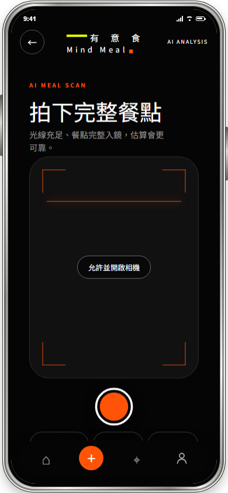
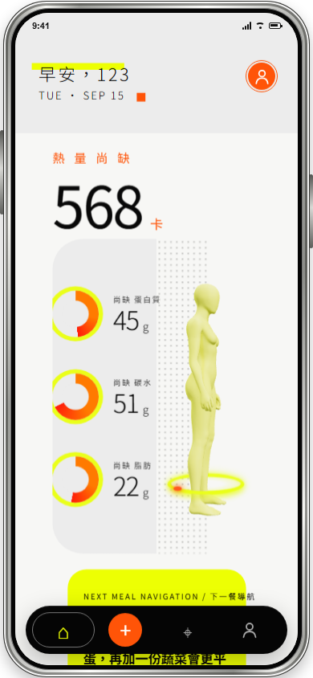
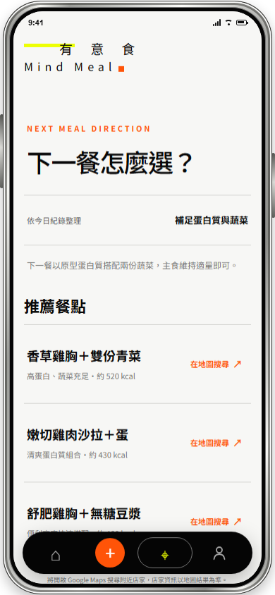

MINDMEAL / UX CASE STUDY
PORTFOLIO 2026
從記錄一餐，
№01/09
從記錄一餐，
到決定下一餐。
一套以 AI 輔助、可修正估算與行動建議為核心的飲食記錄體驗。
UX DESIGNResearch · Flow · Interaction · Prototype



MINDMEAL / 02 CONTEXTUX
PROBLEM 01紀錄流程太長，容易中途放棄
PROBLEM 02營養數值出現了，卻不知道怎麼判讀
PROBLEM 03紀錄完成後，缺乏下一餐的行動方向
№02/09
飲食紀錄的每一步，都是能否形成習慣的關鍵
使用者不是不知道健康重要，
而是很難持續維持飲控並保持紀錄習慣。
我負責競品整理、主要流程、資訊架構、互動狀態與高擬真原型調整。
MVP / MOBILE WEB APP
MINDMEAL / 03 RESEARCHUX
№03/09
競品很完整，我們該如何找到突破點。
競品
主要優勢
改善空間
MindMeal 學習方向
FatSecret
完整資料庫、條碼掃描
輸入仍可能造成負擔
常吃餐與快速修正
Cofit
在地資料、營養師服務
功能較多，新手需要理解
首頁只聚焦今日方向
NutriSnap
拍照、語音、多元輸入
AI 份量判讀仍有限
呈現估算並保留校正
SlimGo
無壓力語氣、每日任務
使用情境較集中
中性語言與健康導向
11 份模擬原型問卷作為初步調整依據
快速記錄 → 看懂資訊 → 選擇下一餐
MINDMEAL / 04 STRATEGYUX
01 / REDUCE把數值變圖像，
02 / TRUSTAI 估算，
03 / ACT記錄之後，
№04/09
從縮短記錄到抉擇上的輔助。
把數值變圖像，
越簡單越容易完成。
用視覺引導營養數值缺口；集中分類功能入口，避免展開、跳頁與重複確認。
AI 估算，
使用者可微調。
標示不確定性，並讓食材與營養結果可以修正。
記錄之後，
輔助選擇下一餐。
依數值推薦餐點與附近店家搜尋，減少選擇負擔。
MINDMEAL / 05 JOURNEYUX
01 / RECORD＋
02 / CONFIRM✓
03 / DECIDE→
三個動作，完成一次飲食決策。
快速記錄
拍照、相簿或搜尋，選擇最省力的輸入方式。
確認估算
AI 先整理食材與營養，使用者只需確認或微調。
選下一餐
依今日狀況取得餐點方向，再前往附近店家。
省下輸入時間 → 降低理解成本 → 減少下一餐的選擇負擔
№05/09
MINDMEAL / 06 KEY EXPERIENCEUX
№06/09
AI 掃描結果必須能被修正。
RECORD & ANALYZE
WHY輸入越複雜，越容易放棄記錄
DESIGN多入口＋清楚進度＋可修正結果
RESULT縮短記錄時間，不犧牲資料控制權
降低輸入成本，同時保留使用者控制權。
拍照最快，但影像辨識一定有誤差；因此流程不能只追求自動化，也必須讓使用者知道正在估算並能快速修正。
MINDMEAL / 07 KEY EXPERIENCEUX
№07/09
推薦飲食，把營養資訊變成下一個選擇。
NEXT MEAL DIRECTION
PROBLEM數字難以直接轉成飲食行動
DECISION先告訴使用者下一餐需要補什麼
DESIGN餐點＋點法＋提醒
RESULT直接搜尋附近可取得的店家
使用者不必自己計算，直接知道下一餐怎麼選。
系統讀取當日營養量、目標與飲食偏好，推薦多組可攝取的營養方向；每組包含點餐方式、飲食提醒與附近店家搜尋。
減少營養判讀 → 減少選餐壓力 → 更容易採取行動
MINDMEAL / 08 ITERATIONUX
FINDING 014 / 11
FINDING 023.55 / 5
FINDING 037 / 11
參考問卷建議，優化與迭代
QUESTIONNAIRE-LED ITERATION
11 位測試者的操作結果，直接對應本次三個關鍵調整。
注意到且知道如何調整營養數值
7／11 人沒有發現，或不知道如何操作分析結果的調整功能。
本版調整 強化 AI 估算提示與編輯入口開始操作的清楚程度
只有 6／11 人能不透過協助一次完成紀錄。
本版調整 移除額外按鈕，縮短搜尋與記錄流程推薦店家對使用者的幫助
第一版為附近能攝取到今日營養的推薦地圖，但餐點的選擇仍然對使用者造成負擔。
本版調整 用今日營養量產生下一餐方向及建議CORE MODIFICATIONS
№08/09
01
AI 估算可確認、可修正
02
搜尋與記錄流程減少步驟
03
推薦直接回應營養缺口
MINDMEAL / 09 OUTCOMEUX
LEARNED
NEXT
SCOPE
№09/09
這次專案，驗證了方向與下一步。
完成從餐點輸入、營養理解到下一餐決策的完整體驗。
登入與訪客流程相機與相簿AI 食物分析手動修正飲食紀錄下一餐推薦Maps 搜尋權限與錯誤狀態
AI 體驗的核心是信任，不只是速度。
顯示限制、提供校正與替代方案，才能讓估算真正可用。
進行真實使用者測試與資料驗證。
下一階段將觀察記錄完成率、修正行為與推薦點擊率。
目前仍是 MVP。
帳號後端、正式飲食資料庫與個人化模型仍待建立。